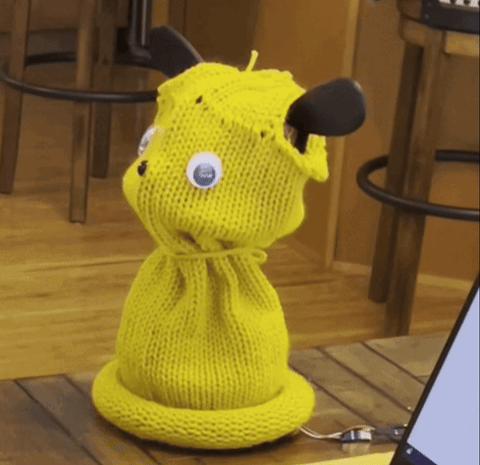
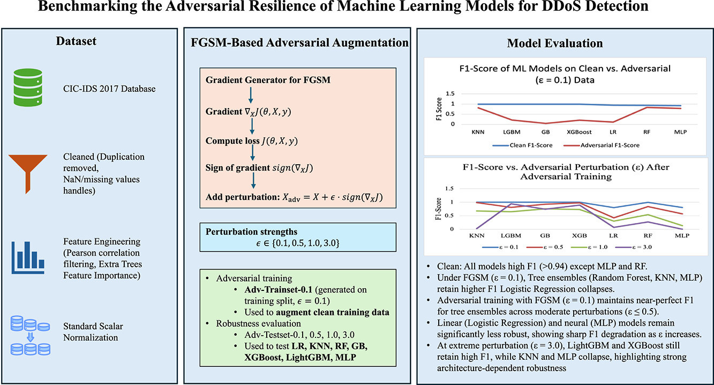

|
Harsh Dadhwal I am a Computer Science graduate from the University of Northern British Columbia, with interests in machine learning, robotics, and intelligent systems. I'm particularly curious about how we can build AI systems that are not only intelligent, but also reliable, adaptable, and capable of interacting naturally with people. |

ResearchMy interests span three connected areas: learning (machine learning, deep learning), perception and language (computer vision, NLP), and autonomy (agentic AI, world models, robotics). |
|
|
RoboJam: A Modular Framework for Social Robotics
Harsh Dadhwal and other contributors Ongoing Research, 2026-present An ongoing research project exploring lightweight, modular software architectures for socially interactive robots. RoboJam investigates how reusable interfaces and hardware-independent components can support adaptable social interactions across different robotic platforms. |
|
 |
“Guardians of the Planet”: A Multi-Realm Robot Bridging Learning and Real-World Sustainability for Children
Adesoye Oyeyiola, Harsh Dadhwal, Devasena Pasupuleti, Gerardo Chavez Castaneda, Ben Knutson, Shruti Chandra ACM Interaction Design and Children (IDC), 2026 paper / github How can social robots make environmental learning more engaging for children? We explored this through a multi-realm experience combining a 2D game, augmented reality, and the physical Blossom robot. The project connects digital and real-world interactions to encourage sustainability-focused learning and won second place in the IDC 2026 Research and Design Challenge. |
|
 |
Benchmarking the adversarial resilience of machine learning models for DDoS detection
Harsh Dadhwal, Mateus de Abreu, Nazanin Parvizi, Sajal Saha Array (Elsevier), 2026 paper / github How reliable are machine learning models when an attacker deliberately tries to fool them? We investigated this question in DDoS detection by evaluating seven classifiers against adversarial attacks. Our experiments examined how different models respond to increasing attack strengths and whether adversarial training can improve their resilience. |
xWebsite design adapted from Jon Barron's academic website |